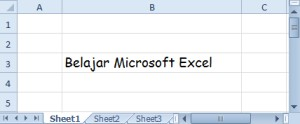
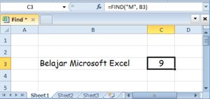
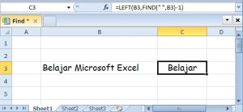

FIND dan SEARCH: mencari posisi teks
FIND dan SEARCH menghasilkan posisi sebuah teks di dalam teks lain. FIND membedakan huruf besar kecil, SEARCH tidak.
=FIND(dicari; dalam_teks; [mulai])
| dicari | Teks yang dicari |
|---|---|
| dalam_teks | Teks sumber |
| mulai | Posisi awal pencarian, default 1 |
Langkah praktik
- Ketik =FIND(" ";A2) untuk mencari spasi pertama.
- Gabungkan dengan LEFT atau MID untuk memotong teks di titik tersebut.
Tangkapan layar praktik


